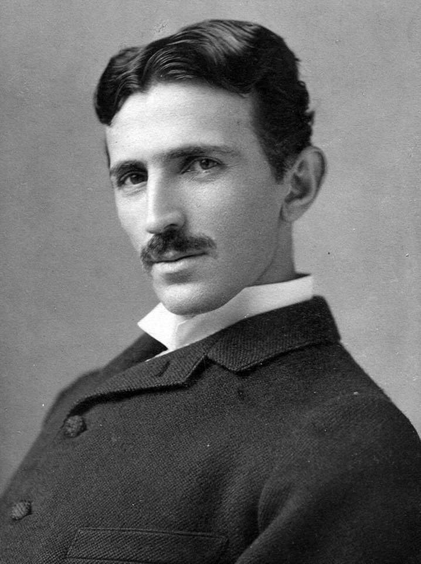
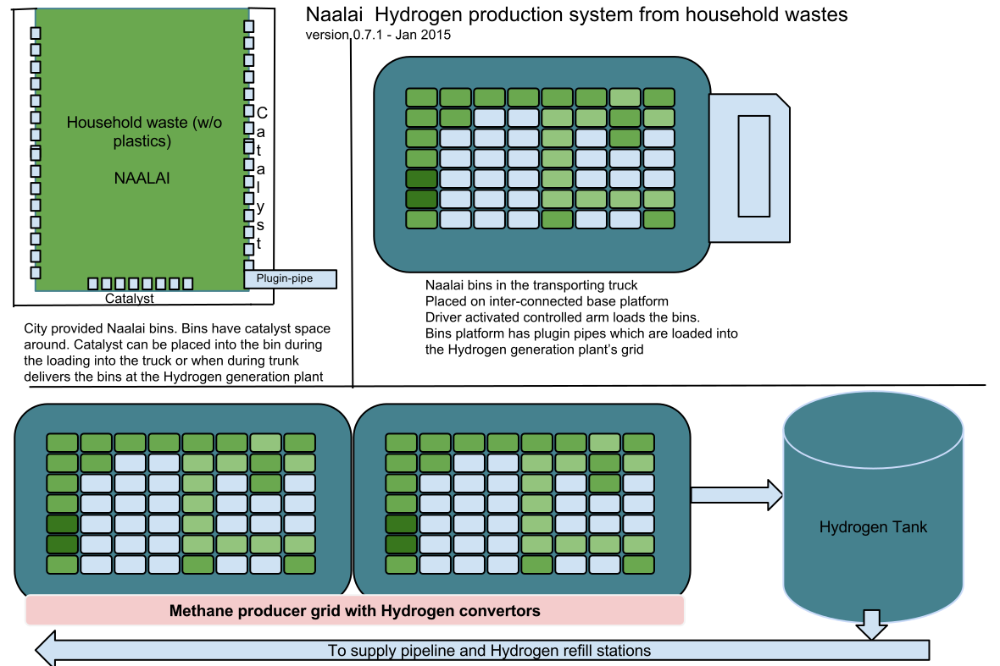

Hydrogen production from household waste - Full Cycle
Naalai Project Goals
- Make use of household waste to feed energy requirements of the world. In this process, create a cleaner sustainable environment
- Create economically viable Hydrogen Fuel project
- Meet the needs of developed and developing countries in the waste management and energy production areas
Team members
- Mohan Chinnappan (mohan.chinnappan.n@gmail.com)
- Luis Ahumada
- Kirill Yurchenko
- Lestin Jackson
- Partha Narayanan
- Akhilesh Kumarasamy
- Sandeep Kumar
- Srinivasan Thirumalai
- Somavenkata GopiNathReddy
- Zahir Hussain
- Add your name by emailing: mohan.chinnappan.n@gmail.com
This project is copy-lefted. Please spread the words and contribute to this project!
- Mohandas K Gandhi
- Dr. A.P.J Abdul Kalam
- Nikola Tesla 
Naalai Project high level architecture

Help needed in the following areas:
- Naalai Bin (capacity: 12 gallons) : wherein the household waste is stored. This bin is enclosed with a layer of catalyst (see the Architecture tab for the details). We need to develop a catalyst which provide a good yield of methane gas in 14 days period. Earth-worms can also be used to help this process. Team of university students can take up this project and help us in this regard. Please contact us (mohan.chinnappan.n@gmail.com)
- Truck inter-connected platform which carries the Naalai bins from homes to Hydrogen generation plant
- Design of efficient Methane to Hydrogen conversion process and equipment
Artificial Leaf - Prof. Daniel Nocera
Paper
Water Splitting-Biosynthetic System with CO Reduction Efficiencies Exceeding Photosynthesis
Search for the Super Battery
Program Description
We live in an age when technological innovation seems to be limitlessly soaring.
But for all the satisfying speed with which our gadgets have improved, many of them share a frustrating weakness: the batteries.
Though they have improved in last century, batteries remain finicky, bulky, expensive, toxic, and maddeningly short-lived.
The quest is on for a “super battery,” and the stakes in this hunt are much higher than the phone in your pocket.
With climate change looming, electric cars and renewable energy sources like wind and solar power could hold keys to a greener future...if we can engineer the perfect battery.
Join host David Pogue as he explores the hidden world of energy storage, from the power—and danger—of the lithium-ion batteries we use today, to the bold innovations that could one day charge our world.